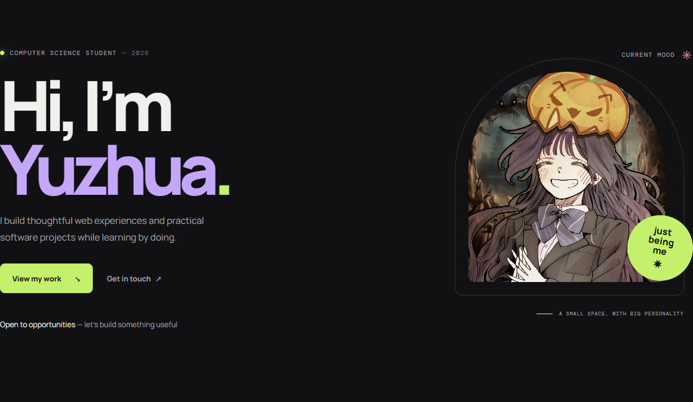
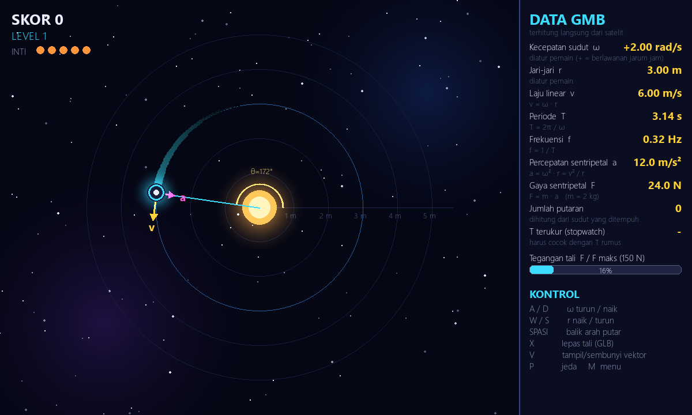
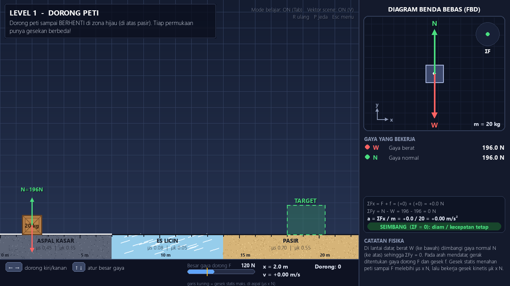

MAKING & LEARNING
Web experiments
Trying ideas out, learning as I go, and adding a little personality to the screen.
COMPUTER SCIENCE STUDENT — 2026
I build thoughtful web experiences and practical software projects while learning by doing.
Open to opportunities — let’s build something useful

01 / A LITTLE INTRO
I’m Yushua Qatrunnada, a Computer Science student interested in web development and software engineering. I enjoy turning ideas into clean, usable, and maintainable projects.
My work combines technical learning with attention to design, usability, and the details that make a product feel considered.
Explore selected projects02 / THE MIX
A rotating collection of interests, little discoveries, and things that make the days more fun.
MAKING & LEARNING
Trying ideas out, learning as I go, and adding a little personality to the screen.
BUILDING IN PUBLIC
Turning experiments into usable projects, one small improvement at a time.
COLLECTING INSPIRATION
Color, character, and the little details that turn a page into a place.
03 / SELECTED WORK
A selection of web and physics projects, from interface design to interactive learning tools.

LIVE WEBSITEA responsive personal portfolio presenting my profile, interests, and selected work with a consistent dark/light visual system.

ACADEMIC PROJECTA survival game built around uniform circular motion. Guide a satellite to intercept meteors while exploring live orbital vectors and physics data.

ACADEMIC PROJECTAn interactive physics game where players solve force-balance challenges with live free-body diagrams, vectors, and calculations.
04 / SAY HELLO